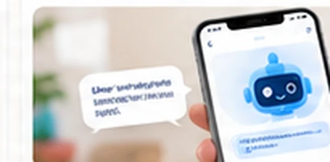

01 · MENARIK PENDAFTARAN
Bantu calon orang tua yakin memilih daycare Anda.
Demo akses CCTV, catatan aktivitas, dan komunikasi yang akan mereka dapatkan setelah bergabung.
Tawarkan pengalaman daycare yang membuat calon orang tua lebih yakin saat survei: akses CCTV terkontrol, kabar kegiatan anak, dan Tanya LEO. Di belakangnya, tim Anda lebih mudah mencatat aktivitas dan mengelola operasional.
Ketika calon orang tua membandingkan beberapa daycare, kualitas pengasuh dan fasilitas tetap utama. Daylio melengkapi layanan Anda dengan pengalaman digital yang konkret—mudah ditunjukkan saat kunjungan, dan berguna setiap hari setelah keluarga bergabung.
Perlihatkan cara orang tua mengakses kamera, menerima kabar anak, dan berkomunikasi dengan tim daycare.
Informasi kegiatan dan akses area kamera yang disetujui tersedia dalam satu pengalaman yang konsisten.
Pengasuh cukup mencatat kegiatan singkat; owner memantau dan orang tua menerima informasi sesuai hak akses.
Orang tua memilih daycare berdasarkan kepercayaan. Daylio membantu Anda menghadirkan layanan yang lebih mudah dijelaskan, lebih konsisten dijalankan, dan lebih praktis dipantau.
Demo akses CCTV, catatan aktivitas, dan komunikasi yang akan mereka dapatkan setelah bergabung.
Aktivitas harian tersusun rapi, sementara pengasuh tetap fokus mendampingi anak.
Kehadiran, kegiatan, dan laporan tim terkumpul dalam satu tampilan pengelola.
Empat kemampuan yang membantu meningkatkan kualitas pengalaman pelanggan sekaligus menyederhanakan pekerjaan tim daycare.
Tawarkan fasilitas live CCTV dengan akses sesuai area dan wali yang diizinkan.
Catatan harian tersampaikan lebih rapi tanpa admin menjawab pertanyaan berulang kali.
LEO menjawab pertanyaan rutin dari catatan pengasuh, sehingga komunikasi lebih efisien.

Pemilik memantau kehadiran anak, aktivitas pengasuh, dan laporan dalam satu tempat.
Gunakan Daylio sebagai bagian dari pengalaman layanan daycare, dari proses memilih hingga keseharian anak.
Tunjukkan parent app, laporan aktivitas, dan akses CCTV yang bisa menjadi pembeda saat calon keluarga membandingkan daycare.
Tim pengasuh memperbarui kegiatan tanpa laporan panjang. Orang tua memperoleh kabar langsung dari aplikasi.
Pantau aktivitas, kehadiran, dan tindak lanjut penting dari satu dashboard pengelola.
Jelajahi bagaimana Daylio bekerja bagi pemilik daycare, orang tua, dan pengasuh. Setiap peran mendapatkan tampilan sesuai kebutuhannya.
Jawaban singkat tentang penggunaan Daylio, CCTV, tim pengasuh, dan langkah memulai.
Tim kami dapat membantu menjelaskan alur aplikasi dan kebutuhan integrasi CCTV.
Daylio memberi nilai tambah yang bisa ditunjukkan saat orang tua survei: akses CCTV yang terkontrol, laporan kegiatan anak, dan Tanya LEO. Pengalaman ini membantu calon orang tua memahami layanan daycare Anda sebelum mengambil keputusan. Hasil pendaftaran tentu tetap dipengaruhi kualitas pengasuhan, lokasi, fasilitas, dan harga.
Pemilik dapat melihat ringkasan kehadiran anak, kegiatan yang dicatat pengasuh, serta informasi operasional dari satu dashboard. Tim pun dapat berbagi informasi dengan lebih rapi sehingga pekerjaan administrasi tidak tersebar di banyak chat.
Daylio mendukung integrasi CCTV existing yang kompatibel. Tim Elenio akan memeriksa model kamera, jaringan internet, dan kebutuhan tayangan sebelum konfigurasi. Tidak semua merek atau model memiliki dukungan yang sama.
Tidak. Akses diberikan kepada wali yang berwenang dan hanya untuk area bersama yang disetujui daycare. Area privat tidak ditayangkan. Pengaturan akses dan persetujuan menjadi bagian dari proses aktivasi.
Tidak. Pengasuh memilih anak, jenis kegiatan seperti makan, tidur, atau bermain, lalu menambahkan catatan dan foto bila diperlukan. Informasi yang dicatat akan ditampilkan pada timeline orang tua sesuai hak akses.
Orang tua bisa menanyakan aktivitas, makan, atau waktu istirahat anak berdasarkan catatan yang tersedia. LEO tidak menebak kondisi anak dari video; jika informasinya belum tercatat, pertanyaan dapat diteruskan kepada pengasuh.
Ya. Daylio cocok untuk daycare independen yang ingin memulai dari kebutuhan inti: informasi anak, aktivitas harian, pengalaman orang tua, dan pengelolaan dasar. Kebutuhan kamera dan layanan tambahan dapat disesuaikan dengan operasional tiap lokasi.
Jadwalkan konsultasi, ceritakan jumlah anak dan kamera yang tersedia, lalu tim kami membantu memilih konfigurasi yang sesuai. Penawaran biaya disesuaikan dengan kapasitas layanan dan kebutuhan integrasi CCTV.
Jadikan transparansi layanan dan kemudahan komunikasi sebagai nilai tambah yang bisa Anda tunjukkan saat calon orang tua survei.